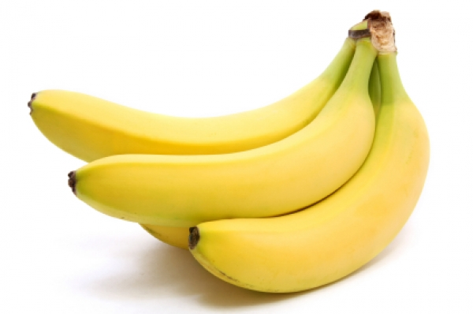

JESTES BANANEM
 Banan to dosc specyficzny owoc jednak fajowski
Banan owoc jest wygiety zas z bananem czlowiekiem ciezko sie czasem przebywa bo mowi o rzeczach dziwnych
Prawdopodobnie jestes osoba zamozna
Dobrze byc bananem ale musisz znalezc swoja nisze
Ludzie moga myslec ze jestes dziwny i maja racje ale ty sie tym nie przejmuj moze zostaniesz kims znanym np. profesorem psychometrii